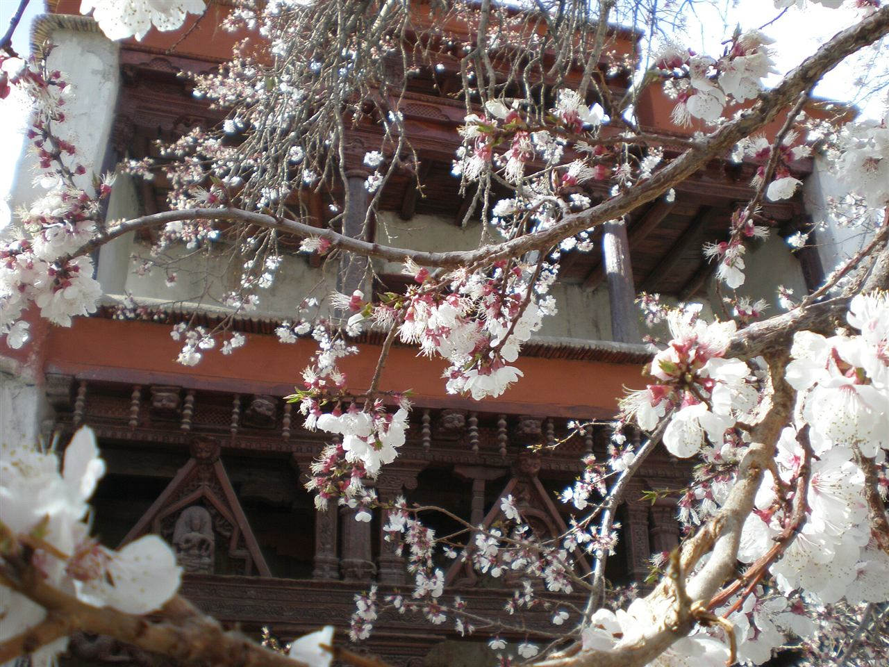

Hotel or guesthouse · selected with your quote
Standard room · shared occupancy
 Ladakh · destination inspiration
Ladakh · destination inspirationA seasonal cultural route proposal. Blossom timing varies and is never guaranteed.
A seasonal cultural route proposal. Blossom timing varies and is never guaranteed. We’ll tailor the route and services to your dates.
Leh · Sham Valley · Kargil region · Leh
See the route at a glance. Open a day for places, experiences and stay details.

Reserve the first 48 hours after arrival for complete rest, following the Ladakh Tourism advisory; do not schedule sightseeing, rides or exertion in this period. Your operator should explain local support and escalation arrangements before the trip. Individual medical advice and wellbeing may require a longer rest period.
Day rhythm Arrival and rest
Protect at least 48 hours from arrival in Leh. Later activities move if this period is not complete.
Count 48 hours from the actual arrival time, rather than treating the second calendar day as permission to start sightseeing. Do not add monastery tours or a motorcycle familiarisation ride today. Discuss any concerns promptly with appropriate local medical support.
Day rhythm Arrival and rest
Protect at least 48 hours from arrival in Leh. Later activities move if this period is not complete.
Day rhythm Local exploration with rest time
Road status, permits and wellbeing decide the final route. Extra stops are alternatives, not a promise to fit everything into one day.
Day rhythm Local exploration with rest time
Road status, permits and wellbeing decide the final route. Extra stops are alternatives, not a promise to fit everything into one day.

Day rhythm Local exploration with rest time
Road status, permits and wellbeing decide the final route. Extra stops are alternatives, not a promise to fit everything into one day.
Day rhythm Local exploration with rest time
Road status, permits and wellbeing decide the final route. Extra stops are alternatives, not a promise to fit everything into one day.
Day rhythm Local exploration with rest time
Road status, permits and wellbeing decide the final route. Extra stops are alternatives, not a promise to fit everything into one day.
Day rhythm Local exploration with rest time
Road status, permits and wellbeing decide the final route. Extra stops are alternatives, not a promise to fit everything into one day.
Day rhythm Departure and transfer
Departure timing takes priority. Extra stops are only considered after allowing a transfer buffer.
Your quote confirms the final package.
Check optional costs before booking: activity tickets, local vehicles, permits, taxes and room supplements are included only when listed in your quote.
per person · shared-occupancy land package estimate
Choose a suggested start or request your own dates.
Request availability for your dates ↗Suggested dates · request availability.
Suggested overnight stops. Your quote confirms the named stays and room details.
Standard room · shared occupancy
Standard room · shared occupancy
Standard room · shared occupancy
Standard room · shared occupancy
Standard room · shared occupancy
Standard room · shared occupancy
Standard room · shared occupancy
Standard room · shared occupancy
Hotel options to discuss. Your quote confirms the selected property.
Leh · Premium upgrade example, outside the sample standard-stay guide price unless separately confirmed.
Before paying, receive named hotels, room categories, meal plan, dates, vehicle/support details, total price, inclusions, exclusions and cancellation conditions in writing.
Optional route ideas, quoted separately. Extra nights are additional to this 9-day proposal.
Request two additional Leh-based nights for Alchi and a selected Likir or Basgo stop after the arrival rest period. Split cultural visits and village time across separate days; the drive plan, guide and added cost will be quoted.
Ask about this extension ↗Request a date-specific checklist. Seek individual professional advice where altitude or exertion is involved.
Well-organised travel, reasonable pricing and a personal touch.
Read on GoogleCourteous service, timely pickup and drop-off, and reasonable pricing.
Read on GoogleGood service, timely arrangements and reasonable rates.
Read on GoogleHighlights summarised from genuine Google reviews. Follow each link for the customer’s original words.
Confirm current roads, permissions, and suitable alternatives before departure.
Ask for your trip coordinator, guide arrangements, and emergency contacts in writing.
Discuss altitude, activity levels, rest time, and your group’s needs before committing.
Guide prices help you plan. Your quote confirms availability, the total and exactly what is included.
Each trip has a proposed inclusion list and an exclusion list. Most overnight proposals cover stays, breakfast and dinner, and agreed route transport. Flights, insurance, lunches, and optional activities are generally separate. Only your accepted quote determines the actual package.
Group dates are available on enquiry. Tell us when you want to travel and we’ll check the group arrangements or a private alternative before you book.
Your quotation sets out the payment schedule, cancellation deadlines and supplier charges for your selected services. Read the booking and cancellation pages, and agree the trip-specific conditions before payment.
 Group journeyModerate
Group journeyModerateHigh mountain landscapes with extra space at the start to settle in.
 Motorcycle journeyChallenging
Motorcycle journeyChallengingA riding itinerary for licensed, experienced riders, with full support terms agreed first.
 Group journeyChallenging
Group journeyChallengingA longer high-altitude itinerary, with permissions and suitability at the centre.